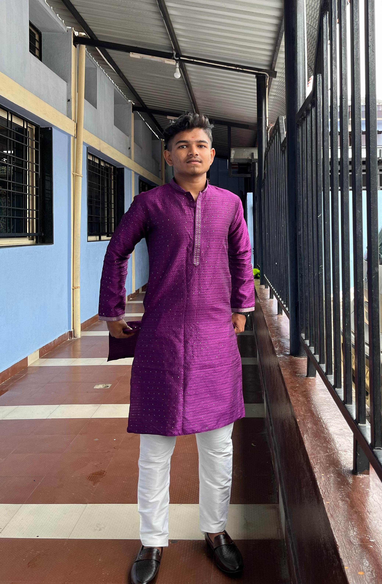

Full-Stack & MERN Developer • App Developer
Building modern web and mobile apps with clean UI, smooth UX, and real-world impact.

I'm an 18-year-old full-stack developer focused on building modern web and mobile applications using React, Next.js, Node.js, Express, and cloud databases like Supabase and MongoDB.
I love working on civic apps, task managers, and productivity tools that solve real problems, while sharpening my fundamentals and studying @ Scaler School of Technology.
HTML5, CSS3, Tailwind CSS, Vanilla JavaScript, TypeScript, React, Next.js (App Router)
React Native, Expo, Component-based UI, Basic State Management
Node.js, Express.js, REST APIs, JWT Auth, Server Components with Next.js
Supabase (Auth, Postgres, Storage), MongoDB (Mongoose), Firebase Auth, Firestore, Cloudinary API
Git, GitHub, VS Code, Vercel, Render, MongoDB Atlas
JavaScript, TypeScript, Basic Python
A full-stack web app where users can browse and filter rental rooms by location, rent range, property type, and tenant preference, and view a detailed page with an image carousel and a direct call button to the owner.
Room owners can sign up, add listings with multiple images, edit or delete them, and manage all their rooms from a dedicated “My Rooms” dashboard.
Tech Stack: Next.js (App Router), React, TypeScript, Tailwind CSS, Supabase (Auth, Postgres, Storage), Vercel
A cross-platform task management app built with React Native and Expo, allowing users to add, edit, and track tasks with a clean, mobile-first interface.
Focused on smooth UX, simple navigation, and practical features for students and professionals to manage their daily work on the go.
Tech Stack: React Native, Expo, TypeScript, Async Storage / local state
TaskFlow lets users create tasks with priority and due dates, and automatically organizes them into Today, Upcoming, and Backlog so they can focus on what matters most.
Includes JWT-based authentication, protected routes, live task counters, task filters, and a fully responsive UI designed for real-world use.
Tech Stack: HTML5, Tailwind CSS, Vanilla JavaScript, Node.js, Express.js, MongoDB (Mongoose), JWT Auth, Render, MongoDB Atlas
A web app to report civic issues with user authentication, an admin panel, Cloudinary image uploads, and map integration for precise location reporting.
Built to make it easier for citizens to raise issues and for admins to manage and resolve them efficiently.
Tech Stack: HTML, CSS, JavaScript, Firebase Auth, Firestore, Cloudinary, Maps API
Open to internships, freelance projects, and collaborations.
Email: hjsudarshanpatil@gmail.com